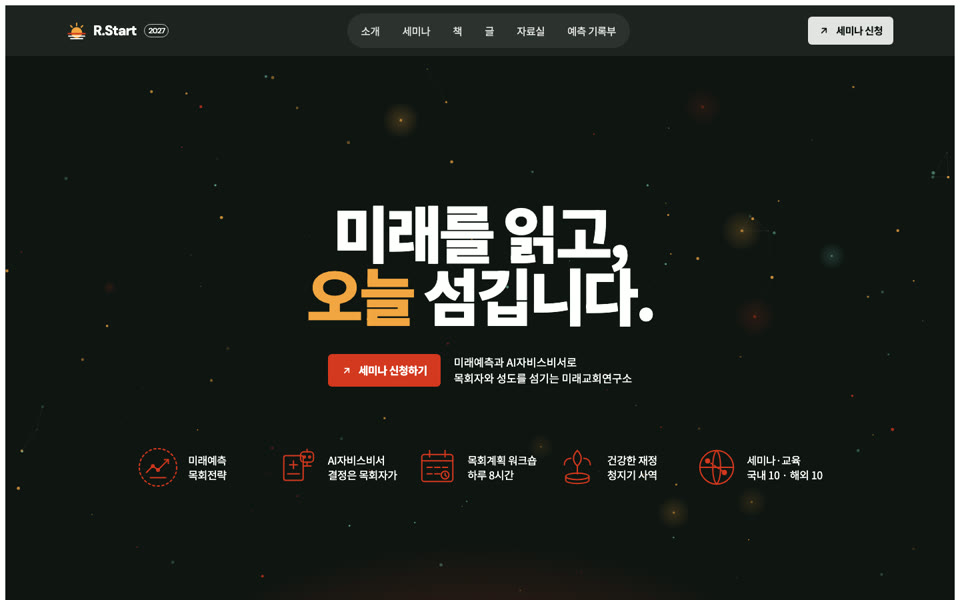

미래를 읽고,
오늘 섬깁니다.
세미나 신청하기
미래예측과 AI자비스비서로
목회자와 성도를 섬기는 미래교회연구소
미래예측
목회전략
목회전략
AI자비스비서
결정은 목회자가
결정은 목회자가
목회계획 워크숍
하루 8시간
하루 8시간
건강한 재정
청지기 사역
청지기 사역
세미나·교육
국내 10 · 해외 10
국내 10 · 해외 10
연구소가 만든 것들
세미나와 책 모두 보기
목회자를 위한 연구소
목회의 일손은 AI 비서에게, 목회자는 말씀과 사람에게.
R.Start는 미래교회연구소의 연구와 교육을 한곳에 모은 홈페이지입니다. 2050 한국교회 전망 위에서 목회전략을 세우고, 설교·목양·행정을 돕는 AI자비스비서를 내 교회에 맞게 만드는 법을 함께 실습합니다.
미래예측
AI자비스비서

2026 열매한 해의
한 해의
섬김
0+
함께한 목회자
세미나·특강·컨퍼런스
0곳
국내 현장 도시
서울·용인·청주·전주·포항 등
0회
해외 선교지 사역
대만·말레이시아·베트남 등
0기
AI자비스비서 설교 세미나
1기부터 5기까지
0+
목회계획 세미나
5곳 순회 · 대만까지
한국교회의 변곡점
2050년, 기독교인은 약 402만 명.
출석 교인은 이미 줄고 있습니다. 연구소는 이 흐름을 하나의 결론이 아니라 갈림길과 신호로 읽고, 미리 준비한 교회가 다시 일어서도록 돕습니다.
세 갈래 미래 보기
다음 세미나 · 신청 중
사흘 뒤, 내 교회의 비서와 함께 돌아갑니다.
목회자 AI 자비스 비서 세미나 · 제주 2박 3일 실습. 내 노트북으로, 우리 교회 자료로, 그 자리에서 만들고 확인합니다.
- 일정
- 3월 29일 ~ 31일
- 정원
- 선착순 30명
- 비용
- 50만 원 (숙식·클로드 요금 포함)
사진: Arthur Miranda · CC0
함께하는 목회자
소식 받기: 신호를 먼저 읽고, 함께 준비합니다.
세미나 일정, 새 책 출간, 연구 노트를 메일로 보내 드립니다. 국내 10개 지역과 해외 10개국의 목회자·선교사가 함께 읽습니다.
세미나와 책배우고, 읽고,
배우고, 읽고,
내 교회에 적용하기.
기수제·지역 순회·집중 과정·선교사 워크샵과, 해마다 1월·7월에 나오는 예측 시나리오 시리즈입니다.